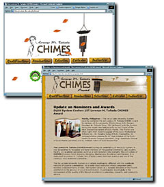
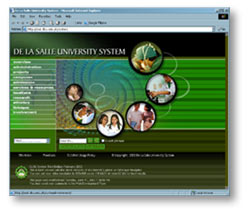
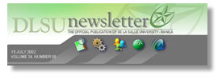

| Documentation
Office : Updates
CHIMES
Award Web Site
by: Reynaldo R. Mendoza Jr.
The
De La Salle University System held the 1st Lorenzo M. Tañada
CHIMES Award rites on May 28, 2002, 4:00 pm at the Chapel
of the Most Blessed Sacrament in DLSU-Manila. The first awardees
of the prestigious awards are Dr. Jose N. Esteban of the Department
of Anatomy of the DLSU-Health Sciences Campus and Engr. Godofredo
C. Salazar of the Mechanical Engineering Department of DLSU-Manila.
To encapsulate the event, the Lorenzo
M. Tañada CHIMES Award web site was conceptualized.
The site used nature’s elements, like the bamboo buttons
and textured paper background (paper is made from
wood pulp) with the overall color scheme in monochromatic
golden rod (similar to the bamboo color). The graphic used
throughout the site was a scenic setting on a lake at sunrise
with a falling leaves effect to emphasize dynamism and life.
This can be accessed at http://system.dlsu.edu.ph/
The
web site is envisioned to inform the public of the criteria
for the award, the recipients of the award, and promote the
overall essence of the award.
CHIMES
stands for:
- Common
Good - has zealous regard for the welfare of others; places
welfare above personal welfare.
- Honesty
- Seeks and upholds the truth and is always sincere and
is of pure intentions.
- Integrity
- is not only honest but is perceived to be so; is just
and fair; uncompromising; commands and earns respect.
- Meritocracy
- earns one's spurs through hard work and diligence.
- Excellence
- is outstanding in his field of endeavor.
-
Service - is committed to work for others with
love, humility and risk
The
Lorenzo M. Tañada CHIMES Award is a regular undertaking
of the DLS System. It was established to recognize and honor
members of the Lasallian community (any student, faculty,
co-academic personnel, alumnus or administrator) who exemplify
the core values of CHIMES. It is dedicated to Lorenzo M. Tañada,
one of DLSU's most illustrious alumnus and one of the country's
most esteemed statesman.
Any
member of the Lasallian family of the DLS System may make
nominations. Forms shall be available at the office of the
Executive Vice President of each institution starting June
of each year. Who knows? You maybe the next recipient of this
prestigious award.
A
New Web Site for a Growing System
by: Albert Anthony D. Gavino and Celina V. Rivera
The
Web Development Team has completed the design of the new DLS System Web site. The new web site is far from its present
structure, which is like a portal to all the system schools.
The new structure provides summarized information on the system's
overview and administration; each campus' directory and map;
admissions information; services and resources, academics
information; research;
community involvement, alumni, linkages and on St. La Salle
and the brothers. The site will feature lasallian songs and
streaming videos on St. La Salle and the brothers. Get all
the information you need from De La Salle University Manila,
De La Salle Zobel, College of Saint Benilde, DLSU Dasmarinas,
DLSU Health and Sciences, DLSU Professional Schools Inc.,
DLSU Araneta, and DLSU Canlubang. A collaboration of all DLS System Schools, the site gives us the embodiment of what the
DLSU system hopes to be.
More
Than Just Static
by: Joie B. Alvarez
Before,
the Documentation Office found Acrobat as a solution in posting
over the Internet, documents that are too tedious to convert
to html. Examples of these documents are faculty and staff
manuals, forms, and office handbooks. However, the research
arm of Documentation Office learned that there is more to
PDF than just a static browser-readable version of a file.
Adobe Acrobat could make a form, made from any software (MS
Word, MS Excel, Adobe Pagemaker, etc.), "fillable."
This feature could save the user from the tiring task of filling-out
the form manually or with the use of a typewriter especially
if a user needs to accomplish duplicate or triplicate copies
of a particular form. A PDF "fillable" form could
be filled out online, printed, signed and submitted to the
department concerned. However, the form should not be mistaken
as saving the data filled-out.
In
the future, if digital signatures would be implemented in
the University, this could also be used in lieu of the manual
signature.
At
present, the following forms were converted to "fillable"
PDF and made available over the Intranet and Internet:
A
New Look for the Online DLSU Newsletter
by: Albert Anthony D. Gavino
The
Online DLSU Newsletter is now sporting a new look. This one
is maintained using active server pages (ASP) templates. New
links have been added, breakthrough news and Greenovation
corner. It also uses a breadcrumb trail (an ASP script) that
tracks down your past cache so you could click them again,
useful especially if you have tracked down deep inside the
pages. A search engine is included to facilitate information
retrieval.
Web
Hosting for Conferences
by: Albert Anthony D. Gavino
Since
last year, the DLSU Web Development Team has been designing
and offering web hosting for conferences. This includes the
design and organization of the web site, ASP or PDF forms
design for conference paper submission and conference registration.
The conference site is hosted in our web server from the start
of the call for paper submission until the conference proper.
The service assists in information dissemination, promotion
of the conference, and registration to international and local
conferences by the means of the web. Some of the conferences
that have been designed and are being hosted here are:
|